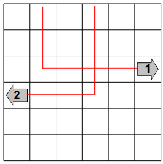
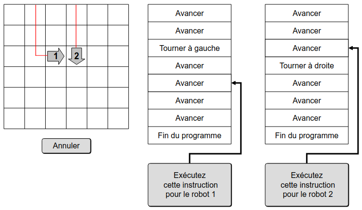
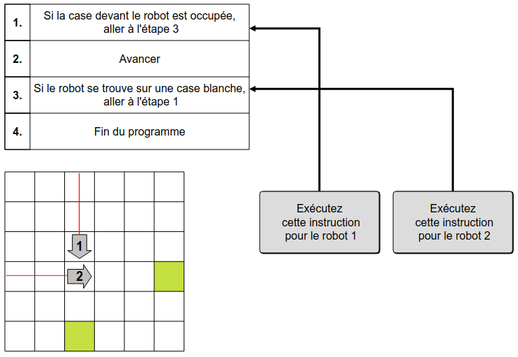
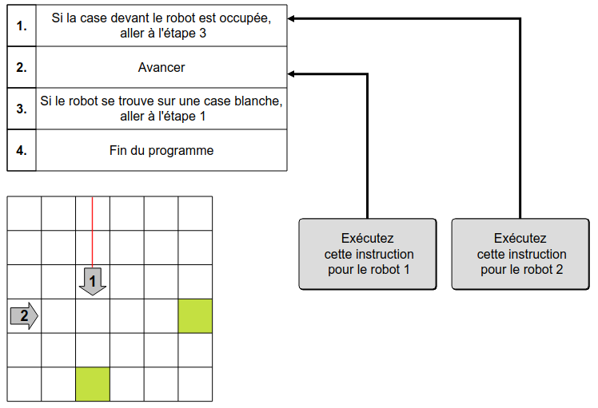
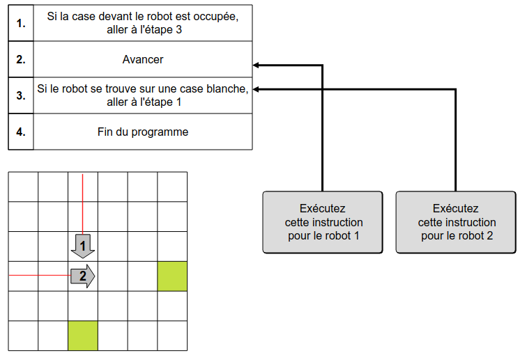
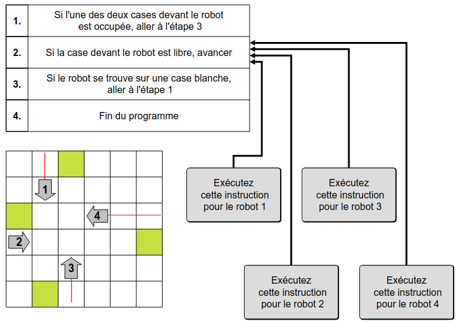
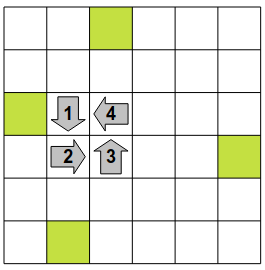

The Beaver has 24 robots represented by the gray arrows.
Each robot is controlled by a seprate program. The two robots are controlled by the same program.
Run the instructions of the robots by yourself to make robot 1 crash into robot 2.
Run the instructions of the robots by yourself to make all the robots are stuck before reaching the green cells.
Click on the Gray Buttons to run the instruction on the robot.
The collision between the robot 1 and the robot 2 can only take place on the intersection of their trajectories.
We start by moving the robot 2 until this point of collision. Then we move the robot 1 until it crashes into the robot 2.
In summary, to solve the subject, you have to click successively on the buttons : 2, 2, 1, 1, 1, 1, 1.
If we bring the robot first 2 to the point of collision of the two robots, then advance the robot 1, then this one will be stuck in front of the robot 2 and will not move forward. Indeed, the instruction in step 1 indicates that if there is a robot in front of it go to step 3, and the execution of step 3 returns to step 1.
We must therefore proceed differently. First bring the robot 1 to the point of collision. We execute the instruction of step 1 at a time when the robot 1 has nothing in front of him. So, the robot 1 is ready to perform Step 2, which consists of moving forward without asking any questions.
We can then bring the robot 2 at the collision point, then perform a step for the robot 1 in order to advance it on the robot 2.
In summary, to solve the subject, you have to click successively on the buttons : 1, 1, 1, 1, 1, 1, 1, 2, 2, 2, 2, 2, 1.
To trap the robots, you have to put all the robots in a position where they are only one box away from the position in which they will get stuck by each other, and put all their programs to the stage 2.
By executing the right number of steps independently for each robot, one can reach this situation :
From there, all you have to do is execute one step for each robot, and they are all stuck.
In summary, to solve the subject, you have to click successively on the buttons : 1, 1, 1, 1, 2, 3, 3, 3, 3, 4, 4, 4, 4, 4, 4, 4, 1, 2, 3, 4.